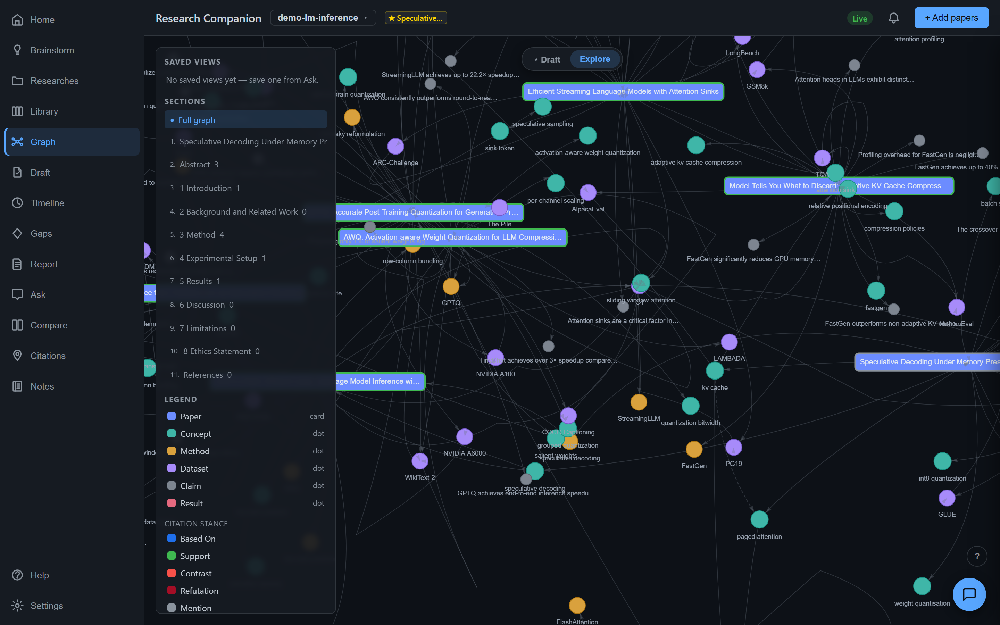
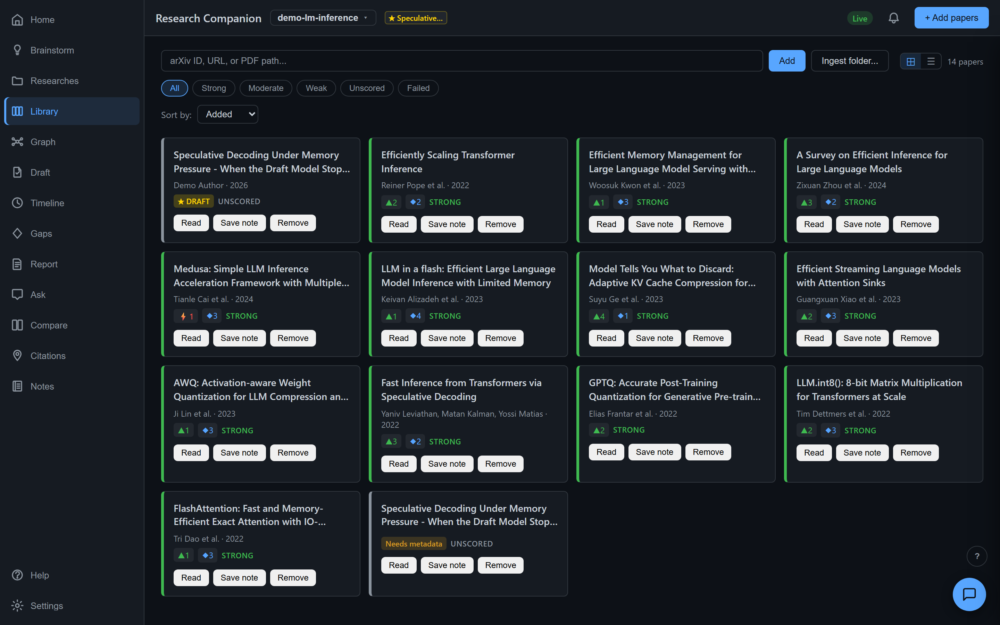
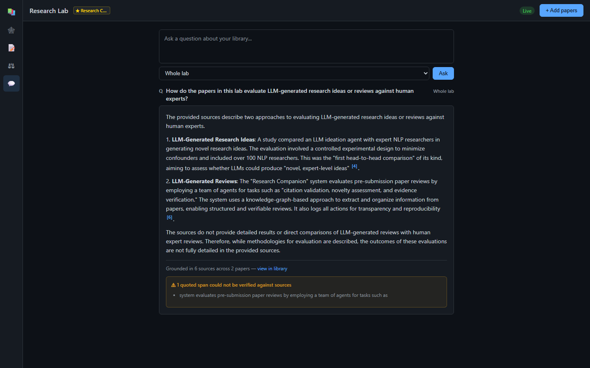
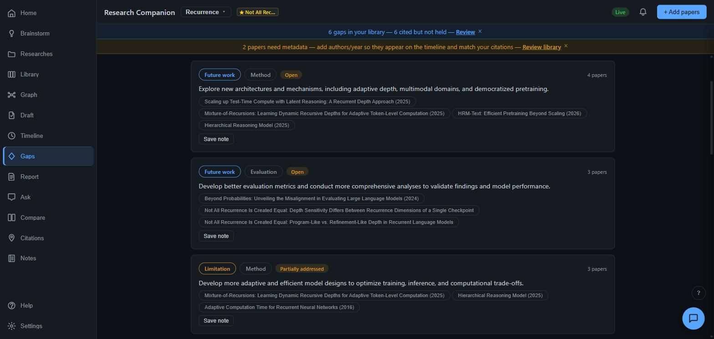
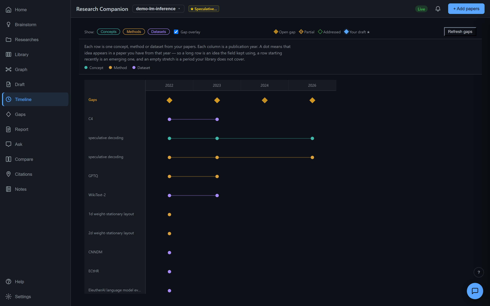
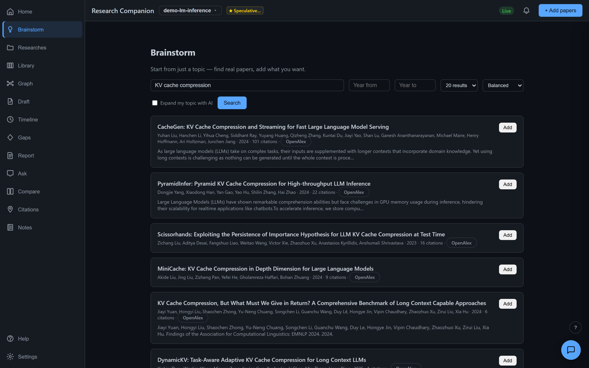
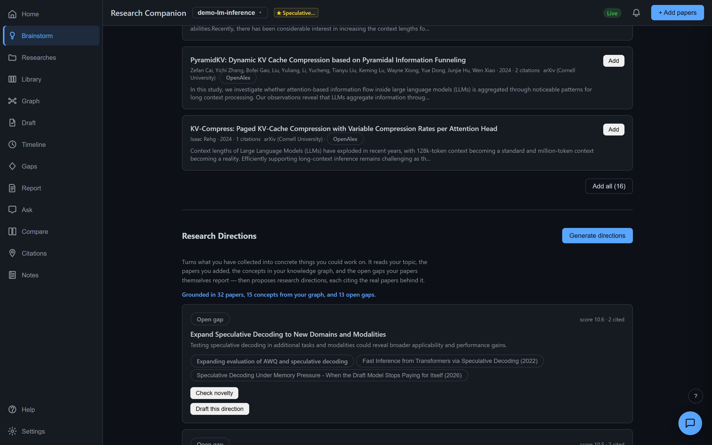
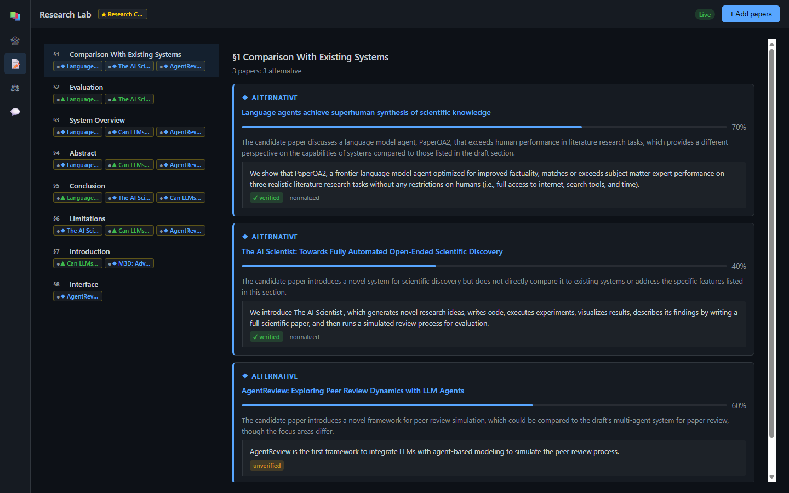
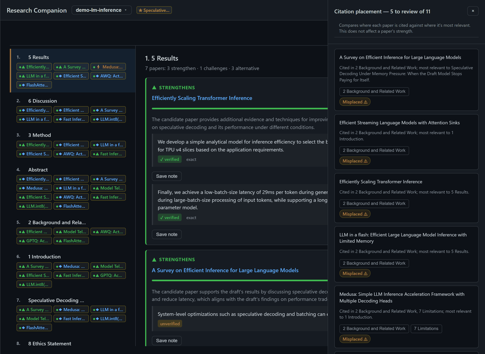
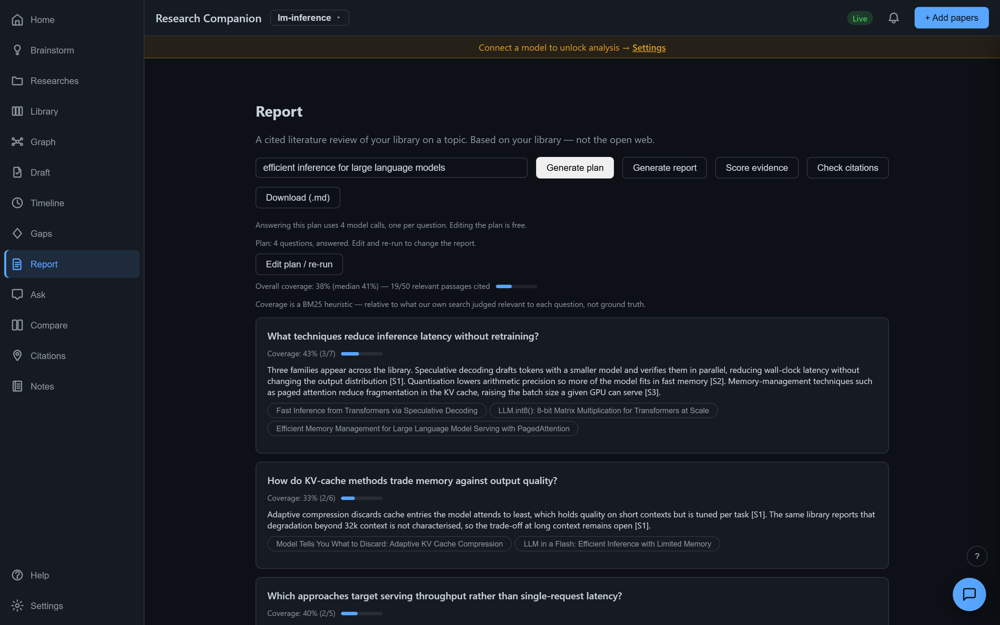

Local-first · MIT · Python 3.10–3.13
Turn a pile of papers into a knowledge graph you can question — then take your own draft through alignment, claim auditing and submission checks. On your machine, with the deterministic half running on no API key at all.

A completed check established it. The only state that earns a tick.
A model judged it. Useful, fallible, never presented as fact.
Attempted and could not finish. Not evidence of a problem.
The one adverse verdict. Everything else is a failure to check.
Why it exists
Ask a language model about the literature and it answers fluently. Some of it is true. Some cites papers that were never written. You cannot tell which by reading, and the confident ones are the dangerous ones.
So the tool is built around one rule: a check that did not run is never shown as a check that passed. It is enforced in the type system — a result whose status is incomplete cannot carry a conclusion, and the code refuses to construct one.
In the tool
Everything you have added, filterable by evidence strength, with the reader one click away and notes savable from anywhere.

A question in plain language, answered from your papers with a citation after every claim — down to the paper and section, not just the title.

Shared ground and unique contributions, then a metric table assembled from what each paper actually reported — with a dash wherever a paper simply did not measure it.
Every paper's own stated limitations and future work, grouped into themes across the whole library. Not the tool guessing where the gaps are — the authors saying it.

Your library laid out by year, so you can see when a method first appears, which years are crowded, and whether your direction joins a new conversation or a long-running one.

Type what you are interested in and it searches real catalogues, then hands you the results to add one at a time — or all at once.

What you have collected, turned into things you could actually work on — each one citing the papers and the open gaps it came from.

Every section of your draft aligned with the papers that relate to it — which strengthen it, which challenge it, and the located quote behind each judgement.

Every reference in your bibliography matched against your library, and every in-text citation compared with the section it is most relevant to.

A topic becomes investigation questions you can edit before paying to answer them — planning is one model call, answering is one per question.

How it fits together
A recommended lifecycle over a non-linear workspace. Follow it end to end, or open any tab at any time — compare papers before building the graph, check citations mid-draft, return to discovery after choosing a direction.
One isolated workspace per project, so an unrelated paper never skews the graph, the gaps, or the directions that come out of them.
Search the real literature, add what is worth reading, let it be parsed and extracted — then read it yourself. Everything downstream is computed from this.
A concept-level graph — five papers using one method are one node linked to all five — then how that structure evolved, then what the authors say is unfinished.
Ranked directions grounded in your library and its stated gaps, screened against real prior work from public catalogues — never against the model's memory.
Draft alignment, a cited literature review over your own library, and the hard question: does the cited passage actually support the claim?
Do the references exist? Do the statistics add up? Does anything near-duplicate your earlier work? Will the venue desk-reject it?
green runs with no API key and no model calls.
Get started
The deterministic half needs no key. Add one only when you want the model-assisted features — and every costed action states its price in model calls before you click it.
The [server] extra adds the browser Lab. Leave it off for CLI only.
pip install "research-companion[server]"
Only needed for the model-assisted features. Everything in green above works without one.
cp .env.example .env # then fill in ANTHROPIC_API_KEY or OPENAI_API_KEY
Opens at 127.0.0.1:8800. Everything stays on your machine.
research-companion lab serve
One workspace per project. Search the literature from the Brainstorm tab, or add by identifier from the terminal.
research-companion workspace new "LM inference"
research-companion add 1706.03762 # arXiv id, DOI, or a local PDF
No model calls: every reference looked up in CrossRef, OpenAlex and arXiv.
research-companion refcheck arxiv:1706.03762 research-companion check-compliance <paper_id> --venue neurips
| Free — no model call | Costs model calls |
|---|---|
| literature search · PDF parsing · knowledge graph · timeline · reference checking · statcheck & GRIM · venue compliance · overlap detection · coverage · notes · BibTeX export | paper extraction (once each) · research directions · novelty screen · brief · report questions and answers · evidence scoring · claim audit · draft alignment · Ask · Compare |
The walkthrough follows one researcher on LM inference from an empty install through to submission checks — every step, with diagrams. It is also available as a PDF.
For agents
Two Claude Code skills run the deterministic checks from your editor, on a scratch workspace that can never touch your real research. An MCP server exposes the same verification tools to any agent.
cp -r skills/refcheck skills/submission-check ~/.claude/skills/ /refcheck paper.pdf # do these citations exist? /submission-check paper.pdf --venue neurips # would this be desk-rejected?